DV-CQ-015 · As permissões do perfil (incluir, excluir) e a função do usuário não são conferidas nas telas de cadastro
Um usuário de **perfil só de consulta** (sem Incluir, Alterar nem Excluir marcados) abriu **Unidade de Medida**, viu os botões Incluir e Excluir, **incluiu** a unidade TSTU1 ("Inclusão efetuada com sucesso.") e a **excluiu** ("Exclusão efetuada com sucesso."). Um usuário **sem nenhuma função profissional** do CQ abriu a **Regra Estabilidade** pelo menu (a tela não tem filtro de acesso). Só as exclusões de regra de análise, regra de amostragem e verificação de amostragem pedem a permissão de excluir.
Como reproduzir o erro, passo a passo
- Entrar com o usuário de perfil só de consulta, abrir Unidade de Medida, Incluir uma unidade e Salvar; depois excluir a mesma.
- Entrar com o usuário sem função profissional e abrir Regra Estabilidade pelo menu.
Esperado
Recusar incluir e excluir a quem só tem consulta; limitar a Regra Estabilidade a quem tem a função de estabilidade.
Obtido
Tudo permitido.
Evidência (captura da tela)
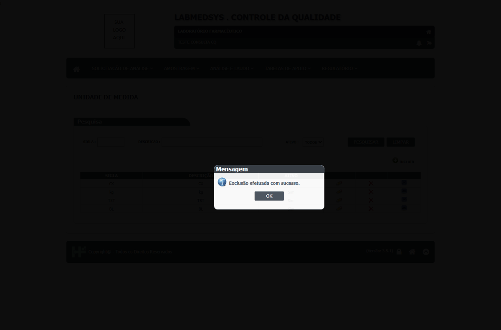
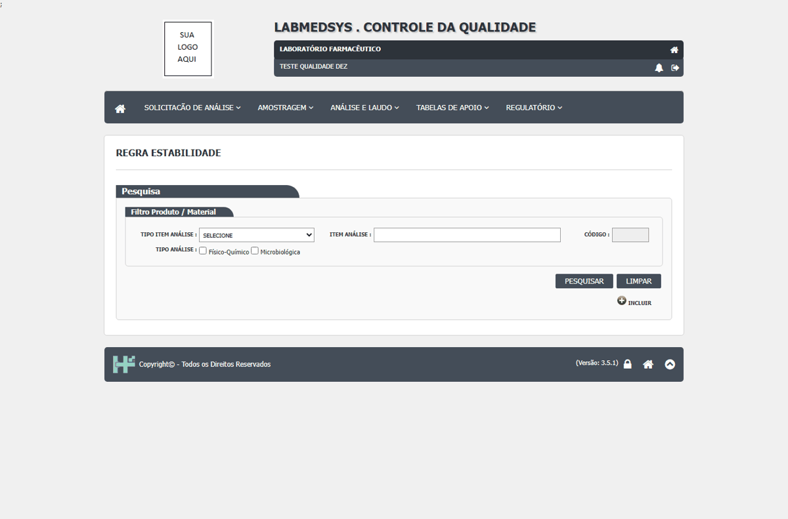
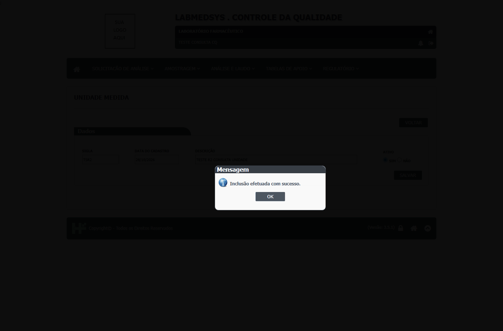
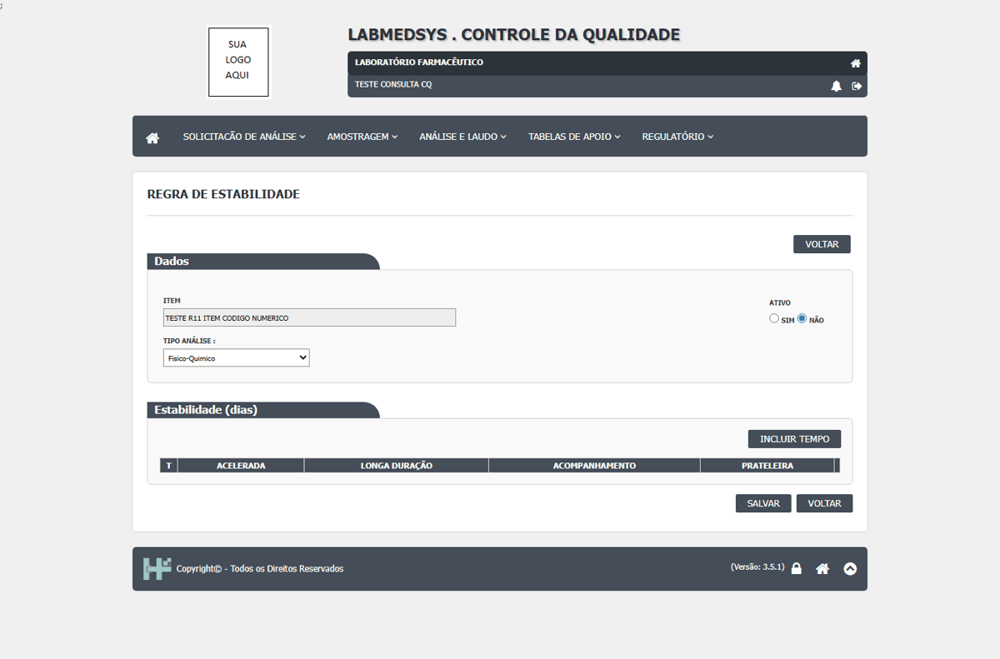
DV-CQ-016 · Regra de Estabilidade: a terceira regra (repetida) é aceita e uma regra pode ser salva sem nenhum prazo
O item 20011 já tinha uma regra físico-química e ganhou uma microbiológica; uma **terceira regra físico-química foi aceita** (em vez de "Item já cadastrado"), então há duas regras iguais para o mesmo item e tipo. Além disso, a regra pode ser **salva sem nenhum tempo**: a lista mostra "Não" nos quatro tipos de estudo e a tela diz "Alteração efetuada com sucesso.". (Valores fora de ordem ou negativos foram recusados: "Acelerada T2 com valor inválido!", CT-CQ-040 passou; o campo Acompanhamento do T3 com -5 não foi apontado.)
Como reproduzir o erro, passo a passo
- Em Regra Estabilidade, criar para o mesmo item uma regra físico-química e uma microbiológica.
- Criar uma terceira físico-química e salvar.
- Criar uma regra e salvar sem incluir nenhum tempo.
Esperado
Recusar a regra repetida e a regra sem prazos.
Obtido
As duas foram aceitas.
Evidência (captura da tela)
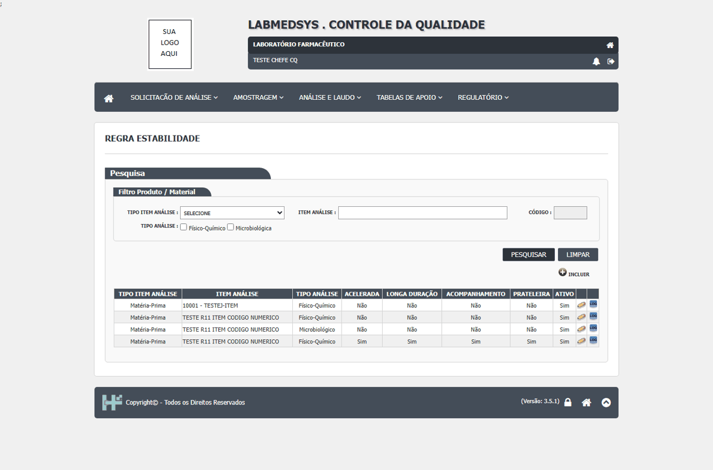
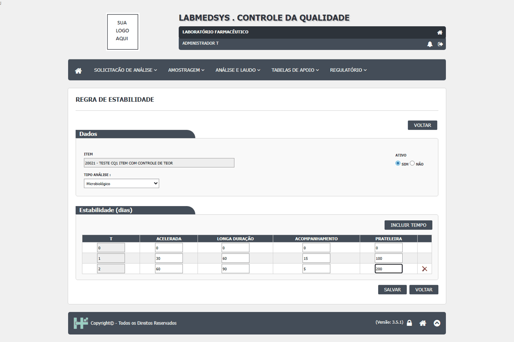
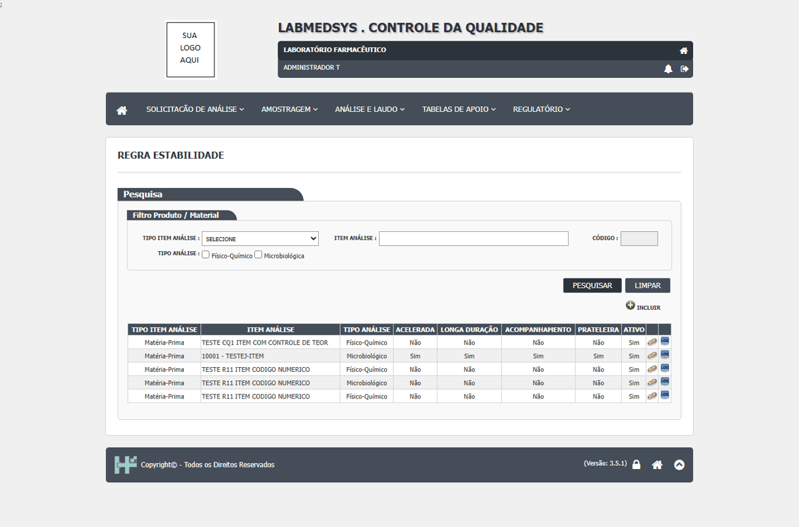
DV-CQ-017 · Alterar a Regra de Estabilidade não pede justificativa e não deixa histórico
Foram incluídos os tempos T0 e T1 numa regra existente: "Alteração efetuada com sucesso." **sem pedir justificativa**, e o ícone **Log** da regra responde **"NÃO EXISTE LOG DE ALTERAÇÃO PARA ESTE REGISTRO."**
Como reproduzir o erro, passo a passo
- Em Regra Estabilidade, abrir uma regra, incluir dois tempos e Salvar.
- Clicar no ícone Log da regra na lista.
Esperado
Pedir justificativa e gravar o valor antigo e o novo.
Obtido
Sem justificativa e sem histórico.
Evidência (captura da tela)
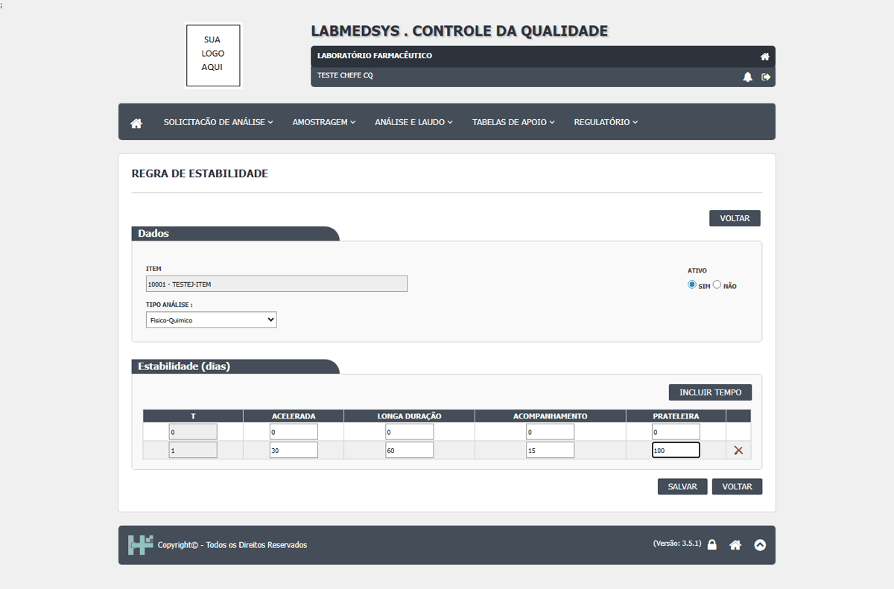
DV-CQ-041 · Salvar a Regra de Estabilidade sem prazos mostra "Ocorreu um erro inesperado."
Na regra de estabilidade nº 3 (item TESTE R11, físico-químico, criada sem nenhum prazo na rodada 1, DV-CQ-016), mudar o campo Ativo e Salvar responde "Ocorreu um erro inesperado." (duas vezes, com o perfil só de consulta); o administrador confirmou que nada foi gravado e que o histórico está vazio. A lista mostra ainda duas regras físico-químicas para o mesmo item.
Como reproduzir o erro, passo a passo
- Abrir Regra Estabilidade, Editar a regra do item TESTE R11 sem prazos.
- Mudar Ativo e Salvar.
Esperado
Gravar a alteração (com justificativa e histórico) ou recusar com mensagem clara.
Obtido
"Ocorreu um erro inesperado."
Evidência (captura da tela)
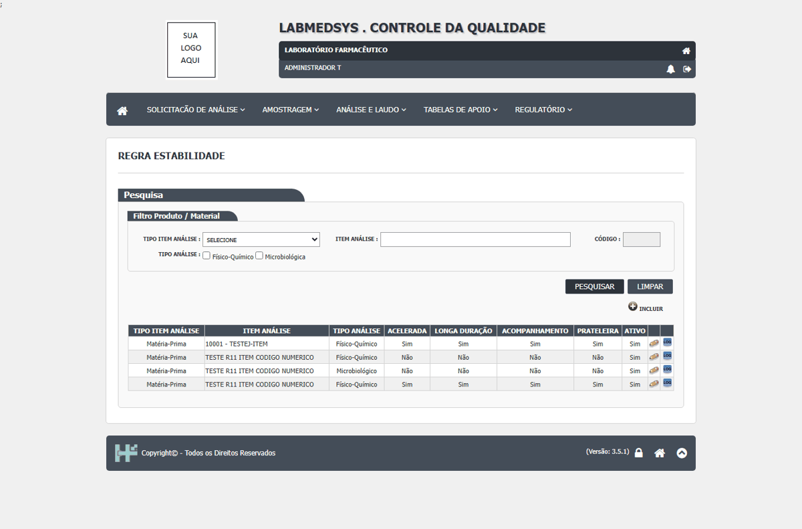
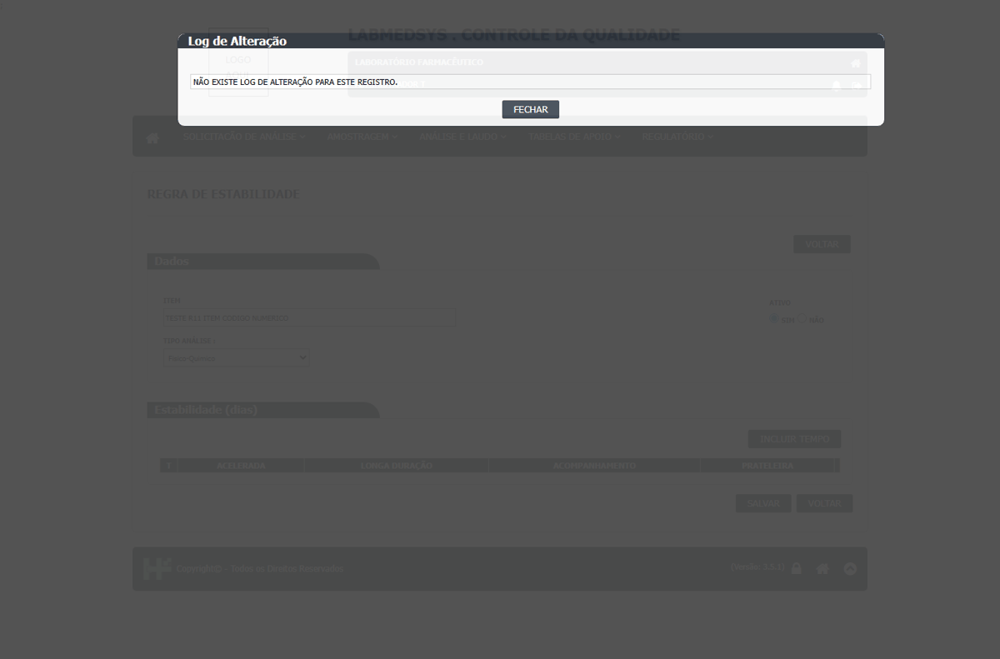
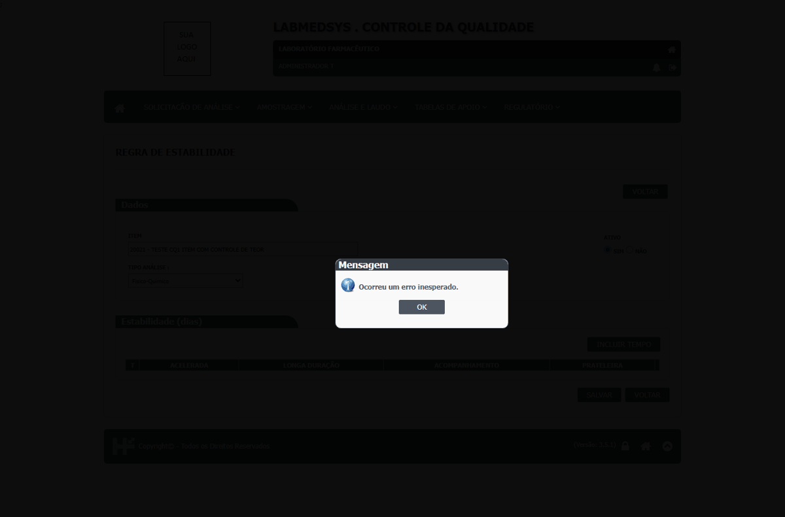